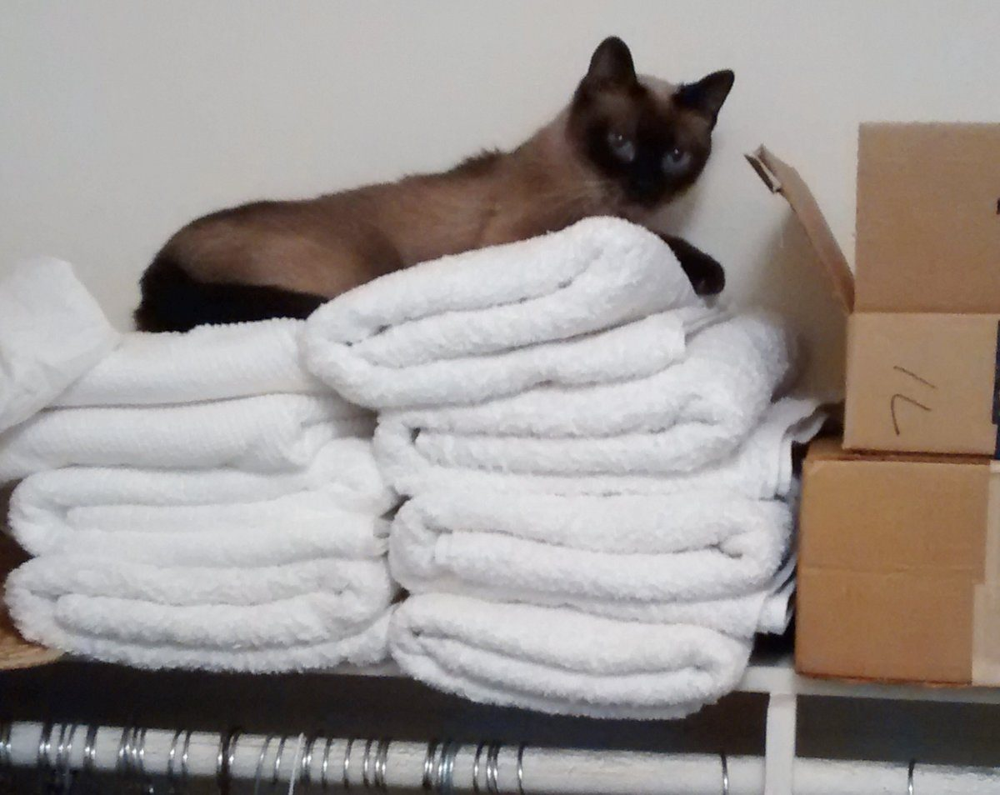

緑の一本 / 店のこと
店のこと
お店について確認できているのは、所在地・電話番号・Instagramのアカウントです。
このページの「想像してみる」部分は、制作側が想像して書いたものです。お店の実際の様子・考え・メニューとは関係がありません。
確認できていること
- 店名は「Linus cafe」、業種はカフェ
- 所在地は静岡県御殿場市新橋1821-2(〒412-0043)
- 電話番号は0550-70-7080
- Instagramは @linuscafe4
- 営業時間・定休日・メニュー・価格・ご予約・駐車場は準備中

想像してみる
「Linus」という名前から
由来は分かりません。制作側は、やわらかい布を一枚かけるような、肩の力を抜いて過ごせるお店かもしれない、と想像しました。あくまで名前の響きからの連想で、実際のお店の姿ではありません。